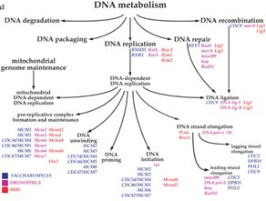
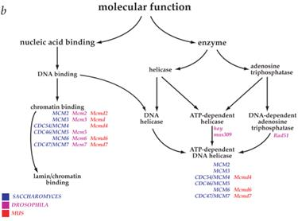
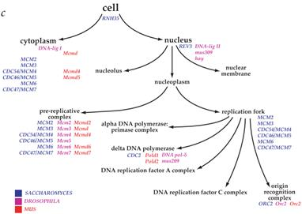
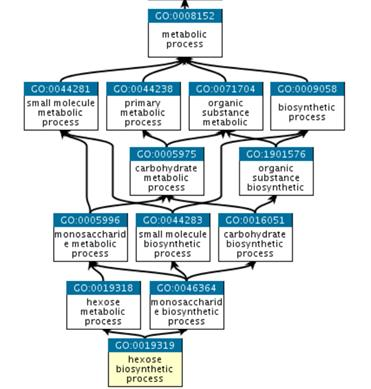
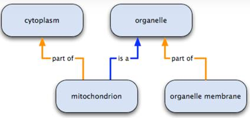
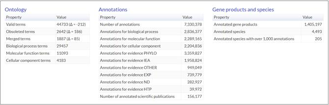
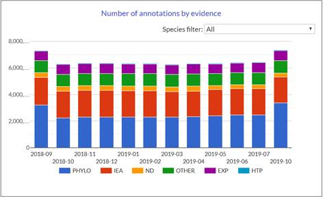

Data publicării: 02.09.2019
Autor articol: Adrian Iftene
Introducere
Scopul acestui raport este de a prezenta ontologia genelor (Gene Ontology – GO) una din cele mai utilizate ontologii din domeniul medical. Ontologia GO descrie cunoștințele noastre despre domeniul biologic în ceea ce privește trei aspecte: (1) funcții moleculare – activități la nivel molecular efectuate de gene, (2) componentele celulare – locațiile la nivel celular unde o genă își îndeplinește o funcție (fie la nivel celular, fie la nivel de complex macromolecular), și (3) procese biologice – procesele mai mari sau programele biologice realizate de mai multe activități moleculare.
Ontologia genelor (Gene Ontology (GO))
Ontologia GO a fost dezvoltată de consorțiul GO, care-și propune să mențină un model actualizat și cuprinzător al sistemelor biologice, de la nivelul molecular la sisteme mai complexe, cum sunt sistemele celulare și organismele (Ashburner et al., 2000) și (TheGeneOntologyConsortium, 2018).
Ontologia GO oferă o reprezentare computațională a cunoștințelor noastre științifice actuale despre funcțiile genelor (sau, mai corect, proteine și molecule de ARN produse de gene) dintr-o mulțime de organisme diferite, de la oameni la bacterii. Înțelegerea funcției genetice – modul în care genele individuale contribuie la biologia unui organism la nivel molecular, celular și organism – este unul dintre obiectivele principale ale cercetării biomedicale. Mai mult, cunoștințele experimentale obținute într-un organism sunt adesea aplicabile altor organisme, în special dacă organismele au în comun gene relevante, pe care le-au moștenit de la același strămoș.
Consorțiul Gene Ontology (GO) s-a constituit în anul 1998, când cercetătorii ce studiau genomul a trei organisme – Drosophila melanogaster (musca de oțet), Mus musculus (șoarece) și Saccharomyces cerevisiae (drojdia de bere sau de pâine) – au fost de acord să lucreze împreună la o schemă comună de clasificare a funcției genetice. Astăzi numărul organismelor reprezentate în GO este de ordinul miilor. GO face posibilă, într-un mod flexibil și dinamic, furnizarea de descrieri comparabile ale genelor omologe și ale secvențelor de proteine din spectrul filogenetic.
De asemenea, GO este în centrul unui efort major de a reprezenta cantitatea mare de cunoștințe biomedicale într-o formă computațională. GO este legată de multe alte ontologii biomedicale și este o bază pentru cercetarea ce implică aplicarea informaticii în biologie și medicină.
GO oferă două resurse principale:
- Ontologia GO: reprezintă structura logică care descrie întreaga complexitate a biologiei, care cuprinde „clasele” (denumite adesea „termeni”) pentru numeroasele tipuri de funcții biologice, căile de desfășurare a diferitelor programe biologice și locațiile celulelor unde apar acestea. De asemenea, apar diferitele tipuri de relații specifice care indică modul în care fiecare dintre aceste clase este legată de alte clase.
- Corpusul adnotărilor GO: cuprinde de la evidența referitoare la un produs genetic specific (de exemplu, o proteină, un ARN care nu codifică sau un complex macromolecular sau o genă) la termeni ontologici specifici pentru a descrie rolul său biologic.
În Figura 1 putem vedea 3 exemple din ontologia GO: metabolismul DNA (a), funcția moleculară (b) și celula (c).



Împreună, cele două (ontologia și adnotările) oferă un model cuprinzător de sisteme biologice. În prezent, GO include descoperiri experimentale din peste 150.000 de lucrări publicate, reprezentate ca peste 700.000 de adnotări susținute experimental. Acestea furnizează setul de date de bază pentru o inferență suplimentară în peste 6 milioane de adnotări funcționale pentru o mulțime diversă de organisme care acoperă arborele vieții.
În plus față de această bază de cunoștințe de bază, resursele GO includ componentele software necesare pentru a edita și executa raționamente logice asupra ontologiilor, acces web la ontologie și adnotări și instrumente analitice care folosesc GO pentru a susține cercetarea biomedicală.
Detalii ale ontologiei GO
Elemente din ontologia GO
Elemente de bază
- Identificator unic și numele termenului – Fiecare termen are un nume care poate fi citit de oameni – de exemplu mitocondriul sau legarea de aminoacizi – și un GO ID, un identificator unic de șapte cifre, prefixat de “GO:”, de exemplu GO: 0005739 sau GO: 0016597.
- Aspect – Precizează în care dintre cele trei sub ontologii (componentă celulară, proces biologic sau funcție moleculară) aparține termenul.
- Definiție – O descriere textuală a ceea ce reprezintă termenul, la care se adaugă referințele la sursele de informație.
- Relații cu alți termeni – Modul în care termenul se raportează la alți termeni din ontologie. Toți termenii (în afară de termenii rădăcină care reprezintă fiecare aspect, mai sus) au o relație de subclasă cu un alt termen; de exemplu, transportul transmembranului cu glucoză (GO: 1904659) este un transport monosacharid (GO: 0015749). Ontologia genelor are următoarele tipuri de relații: “is a”, “part of”, “has part” și “regulates”.
Elemente opționale
- ID-uri secundare (cunoscute și sub denumirea de ID alternativ) – ID-urile secundare apar atunci când doi sau mai mulți termeni au semnificație identică și sunt contopiți într-un singur termen. Toți termenii ID-uri sunt păstrați astfel încât să nu se piardă nicio informație (de exemplu, adnotări la ID-urile combinate).
-
Sinonime – Cuvinte sau expresii alternative strâns legate în sensul termenului nume, cu indicarea relației dintre nume și sinonim, date de sfera de sinonimie. Scopurile sinonimelor GO sunt:
- Exact: un echivalent exact; schimbabile cu termenul nume; de exemplu ciclul ornitinei este un sinonim exact al ciclului ureei;
- Broad: sinonimul este mai larg decât termenul; de exemplu diviziunea celulară este un sinonim larg al citokineziei;
- Narrow: sinonimul este mai restrâns sau mai precis decât termenul nume; de exemplu reparația pirimidin-dimerului prin fotoliză este un sinonim restrâns al reparației fotoreactive;
- Related: termenii sunt înrudiți într-un mod imprecis; de exemplu complexul citocromului bc1 este un sinonim înrudit cu activitatea ubiquinol-citocrom-c, reductază virulența este un sinonim legat de patogeneză.
Tipurile de sinonime personalizate sunt de asemenea utilizate în ontologie. De exemplu, o serie de sinonime sunt desemnate ca sinonime sistematice; sinonimele de acest tip sunt sinonime exacte ale termenului nume.
- Referințe încrucișate ale bazei de date – Referințele încrucișate ale bazei de date sau dbxrefs se referă la obiecte identice sau foarte similare din alte baze de date. De exemplu, activitatea moleculară a izomerazei retiniene a funcției moleculare (GO: 0004744) este referențiată cu (RHEA: 24124); Asimilarea ulfatului de proces biologic (GO: 0000103) are referința încrucișată InterPro sulfat de adeniltiltransferază (IPR002650).
- Cometariu – Orice informații suplimentare despre termen și despre utilizarea acestuia.
- Subset – Indică faptul că termenul aparține unei submulțimi de termeni, de exemplu una dintre submulțimile GO.
- Etichetă învechită – Indică faptul că termenul a fost depreciat și nu ar trebui utilizat. Un termen GO este învechit atunci când este în afara domeniului de aplicare sau definit în mod înșelător sau descrie un concept care ar fi mai bine reprezentat într-un alt mod și trebuie eliminat din ontologia publicată. În aceste cazuri, termenul și ID-ul persistă încă în ontologie, dar termenul este etichetat ca învechit și toate relațiile cu ceilalți termeni sunt eliminate. Se adaugă un comentariu la termenul care detaliază motivul învechirii și se sugerează, dacă este posibil, termenii de înlocuire.
Relații din ontologia GO
Ontologiile GO sunt structurate ca un graf, unde termenii sunt noduri în graf și relațiile (cunoscute și ca proprietăți ale obiectului) se realizează între termeni ca muchii. În GO termenii “copil” sunt mai specializați decât termenii “părinți”, dar spre deosebire de o ierarhie strictă, un termen poate avea mai mult de un termen părinte. De exemplu, procesul biosintetic al procesului hexos pe termen biologic are doi părinți, proces metabolic hexos și proces biosintetic monosacharid. Acest lucru reflectă faptul că procesul biosintetic este un subtip al procesului metabolic și hexoza este un subtip de monosacharidă (vezi Figura 2 de mai jos).

La fel cum este definit fiecare termen GO, relațiile dintre termenii GO sunt, de asemenea, clasificate și definite. Relațiile din GO sunt “is a” (sau “is a subtype of”); “part of”; “has part”; “regulates”, “negatively regulates” și “positively regulates”.
Relațiile de bază
Relațiile de bază din ontologia GO sunt (o parte pot fi vizualizate în Figura 3):
- “is a” – Dacă spunem că A is a (este un) B, înseamnă că nodul A este un subtip al nodului B. De exemplu, ciclul celular mitotic is a (este un) ciclu celular sau activitatea liază is a (este o) activitate catalitică. Exemplu de reprezentare în GO a unei astfel de relații: GO:1904659:glucose transport is a GO:0015749:monosaccharide transport.
- “part of” – este folosită pentru a reprezenta relații între părți și întreg. Exemplu din ontologia GO: GO:0031966:mitochondrial membrane is part of GO:0005740:mitochondrial envelope.
- “has part” – reprezintă o relație parțială din întreg din perspectiva părintelui.
- “regulates” – o relație care descrie cazul în care un proces afectează în mod direct manifestarea unui alt proces, adică primul îl reglementează pe cel de-al doilea.

Statistici
În statisticile puse la dispoziție de consorțiu, în luna octombrie 2019 aveam datele prezentate mai jos în Figurile 4 și 5. După cum se poate observa în Figura 4, la nivelul ontologiei există peste 44.700 de termeni valizi (majoritatea fiind termeni biologici), ce au peste 7.330.000 de adnotări (majoritatea fiind pentru procese biologice).

În Figura 5 putem observa numărul adnotărilor pe specii la nivelul ontologiei GO.

Concluzii
În acest raport am văzut câteva detalii despre Ontologia genelor (GO), una din cele mai folosite ontologii din domeniul medical. Este interesant faptul că GO își propune să reprezinte starea actuală a cunoștințelor în biologie, iar pentru asta ea este constant revizuită și extinsă pe măsură ce cunoștințele biologice se acumulează. Schimbările se fac săptămânal (majoritatea relativ mici) de către o echipă de editori de ontologie cu experiență vastă în reprezentarea biologiei și a cunoștințelor din domeniul informaticii.
Referințe bibliografice
- Ashburner, M., Ball, C., Blake, J., Botstein, D., Butler, H., Cherry, J., Davis, A., Dolinski, K., Dwight, S., Eppig, J., Harris, M., Hill, D., Issel-Tarver, L., Kasarskis, A., Lewis, S., Matese, J., Richardson, J., Ringwald, M., Rubin, G., Sherlock, G. (2000) Gene ontology: tool for the unification of biology. The gene ontology consortium. Nature genetics 25(1), pp. 25-29.
- The Gene Ontology Consortium (2000) Gene Ontology: tool for the unification of biology. Nature America Inc. Vol. 20, pp. 25-29. http://genetics.nature.com
- The Gene Ontology Consortium (2018) The Gene Ontology Resource: 20 years and still GOing strong. Nucleic Acids Research 47(D1), D330-D338.